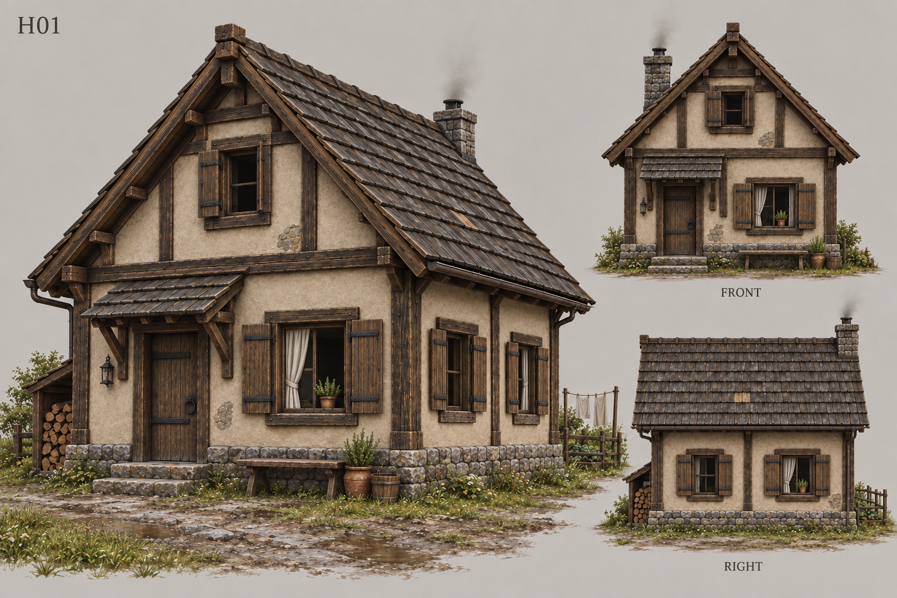
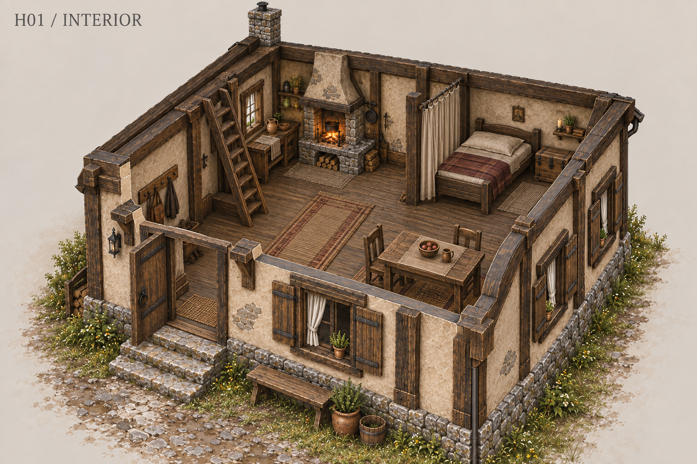
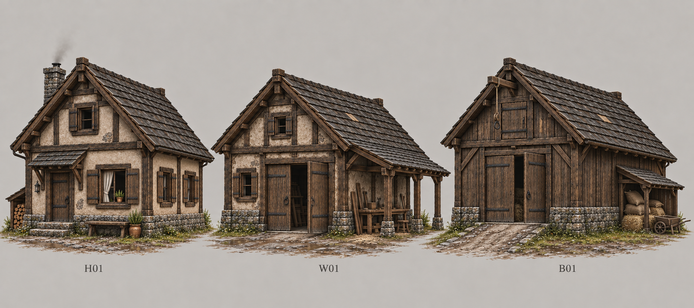
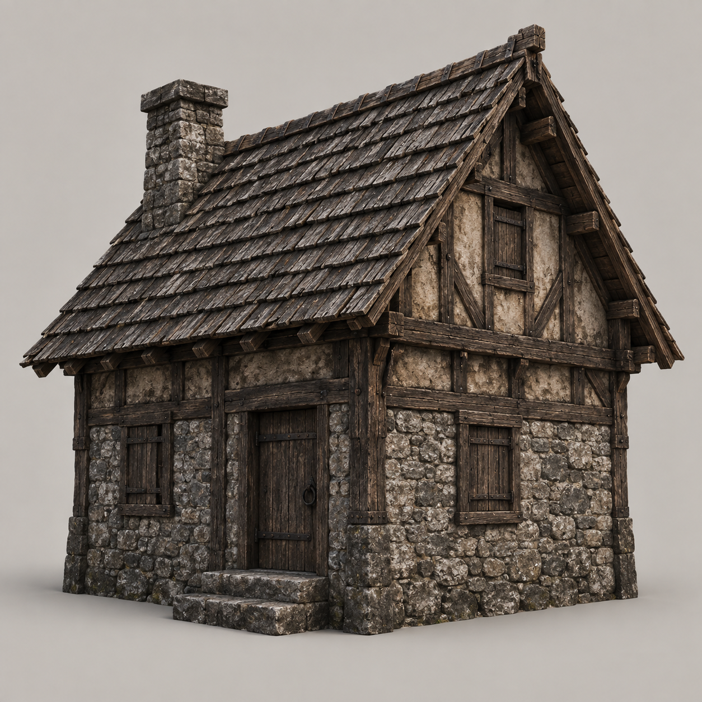
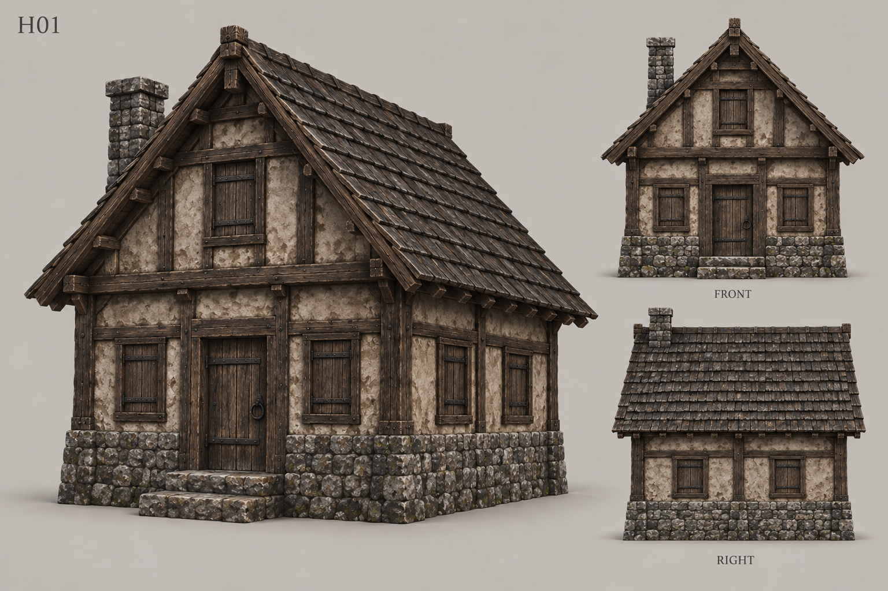

ASHBOUND / «ЛЕСНЫЕ ДВОРЫ» · VILLAGE-ARCH-01 · 24.09.2026
Дома, в которых живут
H01 принят · далее интерьеры W01/B01 и Blender
Продолжение выбранного варианта Б: исправные дома, свет у стола, сухой вход, тепло от очага, рабочие дворы. Первый образец H01 проектируется с интерьером и физической дверью для входа без загрузочного перехода.
H01 · Обжитой дом
Вход слева под козырьком, жилое окно справа, два боковых окна, очаг сзади. Скамья и хозяйство оставляют проход свободным.

H01 · Непрерывный вход и простой быт
Очаг, стол с двумя стульями, койка, сундук и место для одежды. Крыша снята только на поясняющем разрезе. Печь с лежанкой сохранена как вариант другого дома.

Это концепт обстановки. Открывание двери, замок, ограбление сундука и реакция хозяина ещё не реализованы. Обновлённый контракт интерьеров.
H01 / W01 / B01 · Один язык, разные дела
Дом, местная мастерская с навесом и общий амбар с удобной разгрузкой. Этот лист сравнивает назначение и массы; размеры первого дома задаёт отдельный чертёж.

Вид с уровня человека
Извилистая улица, отдельные дворы и хвойные просветы. Иллюстрация атмосферы; точная расстановка остаётся по схеме Б.

Источники, промпты и ранние исследования
SHA и происхождение файлов · Первые промпты · Обжитой дом · Исправление связности · Семейство · Разрез · Улица
Исходная архитектурная опора AshBound

Первая закрытая проба — заменена текущим предложением
